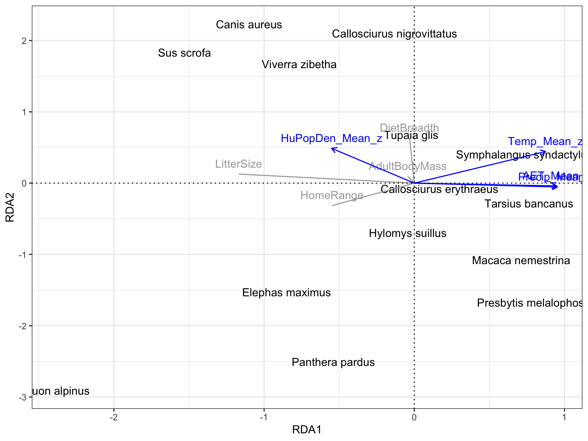
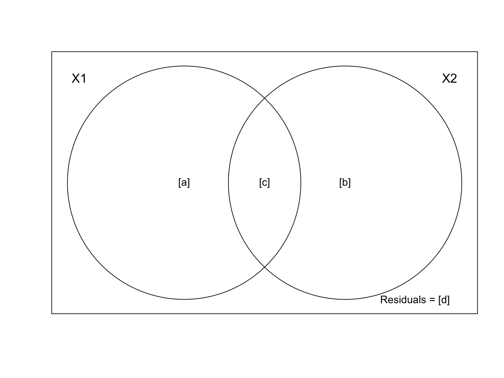

Redundancy Analysis
Radchuk Viktoriia
2023-03-18
What is RDA
- A canonical (i.e. constrained) ordination method
based on eigenvector analysis.
- Combines multiple regression and PCA.
- Finds linear combinations of all explanatory variables that best explain the variation in the response matrix.
Mathematical notation
We have \(n\) objects (sites) with \(p\) response variables (often species if dealing with community data) and \(m\) explanatory (environmental) variables.
\[ \mathbf{Y} = \begin{bmatrix} y_{1_1} & y_{1_2} & y_{1_3} & \dots y_{1_{p}} \\ y_{2_1} & y_{2_2} & y_{2_3} & \dots y_{2_{p}} \\ y_{3_1} & y_{3_2} & y_{3_3} & \dots y_{3_{p}} \\ \vdots & \vdots & \vdots & \ddots \\ y_{n_1} & y_{n_2} & y_{n_3} & \dots y_{n_{p}}\\ \end{bmatrix}; \mathbf{X} = \begin{bmatrix} x_1 & x_{1_2} & \dots x_{1_{m}}\\ x_2 & x_{2_2} & \dots x_{2_{m}} \\ x_3 & x_{3_3} & \dots x_{3_{m}} \\ \vdots & \vdots & \ddots \\ x_{n_1} & x_{n_2} & \dots x_{n_{m}} \\ \end{bmatrix} \] The method is applied to matrix \(Y\) of centered response variables and a matrix \(X\) of centered (or standardised) explanatory variables.
How it works
the method regresses each \(y\) variable on explanatory matrix \(X\) and computes the fitted values \(\widehat{y}\). \(y_1 = \alpha + \beta_1\times x_1 + \beta_2\times x_2 + ... + \beta_m\times x_m + \epsilon_i\);
\(\epsilon_i \sim N(0, \sigma^2)\)Combines all vectors \(\widehat{y}\) into a matrix \(\widehat{Y}\) of fitted values.
Computes PCA on the matrix \(\widehat{Y}\) of fitted values –> gives a vector of canonical eigenvalues and a matrix \(U\) of respective canonical eigenvectors.
The ordination axes explain the variation in the data of the response matrix –> this is a statistical analysis.
Requeirements / Assumptions
- For RDA explanatory variables are often
standardized (because these are usually measured in different units and
thus are not comparable).
- RDA can be computed on a covariance or a
correlation response matrix. Remember: if the variables are in different
units or represent quantities that are not comparable, then they should
be standardized prior to the analysis (i.e. PCA will be computed on
correlation matrix).
- Condition on number of samples for number of explanatory variables: \(m<n-1\).
Application: Impact of environment on mammalian life history traits
We aim to assess how the environment in which
species live affect their life history and other
traits.
We focus on >140 mammal species distributed in SE Asia.
As example here we focus on following environmental
variables: mean yearly precipitation, mean yearly temperature,
actual evapotransporation rate and human population density. All
environmental variables were measured within the distribution range of
the studied species.
We looked at the selection of (available) traits, using PanTHERIA
database (Jones et al. 2009).
Data
# reading in the file with the 143 species of interest
spSEAsia <- read.csv(file = here::here('data', 'Species_SEAsia_02_02_16_fin.csv'))
str(spSEAsia)## 'data.frame': 143 obs. of 7 variables:
## $ ID : int 1 2 3 4 5 6 7 8 9 10 ...
## $ Sp_bin : chr "Aeromys tephromelas" "Arctogalidia trivirgata" "Arctonyx collaris" "Atherurus macrourus" ...
## $ Area : num 362087 2497556 5509688 2671967 362969 ...
## $ Genus : chr "Aeromys" "Arctogalidia" "Arctonyx" "Atherurus" ...
## $ Species : chr "tephromelas" "trivirgata" "collaris" "macrourus" ...
## $ Location: chr "Sunda" "Both" "Indochina" "Indochina" ...
## $ Cat5 : chr "Sunda" "Both" "Indochina" "Indochina" ...# read in the PanTheria database
pant <- read.delim(file = here::here('data', 'Pantheria.txt'))
str(pant)## 'data.frame': 5416 obs. of 55 variables:
## $ MSW05_Order : chr "Artiodactyla" "Carnivora" "Carnivora" "Carnivora" ...
## $ MSW05_Family : chr "Camelidae" "Canidae" "Canidae" "Canidae" ...
## $ MSW05_Genus : chr "Camelus" "Canis" "Canis" "Canis" ...
## $ MSW05_Species : chr "dromedarius" "adustus" "aureus" "latrans" ...
## $ MSW05_Binomial : chr "Camelus dromedarius" "Canis adustus" "Canis aureus" "Canis latrans" ...
## $ X1.1_ActivityCycle : num 3 1 2 2 2 2 -999 2 3 -999 ...
## $ X5.1_AdultBodyMass_g : num 492714 10392 9659 11989 31757 ...
## $ X8.1_AdultForearmLen_mm : num -999 -999 -999 -999 -999 -999 -999 -999 -999 -999 ...
## $ X13.1_AdultHeadBodyLen_mm : num -999 745 828 872 1055 ...
## $ X2.1_AgeatEyeOpening_d : num -999 -999 7.5 11.9 14 ...
## $ X3.1_AgeatFirstBirth_d : num 1652 -999 -999 365 548 ...
## $ X18.1_BasalMetRate_mLO2hr : num 40293 -999 -999 3699 11254 ...
## $ X5.2_BasalMetRateMass_g : num 407000 -999 -999 10450 33100 ...
## $ X6.1_DietBreadth : num 3 6 6 1 1 3 2 2 -999 -999 ...
## $ X7.1_DispersalAge_d : num -999 330 -999 255 180 ...
## $ X9.1_GestationLen_d : num 386.5 65 61.2 61.7 63.5 ...
## $ X12.1_HabitatBreadth : num 1 1 1 1 1 -999 -999 1 1 -999 ...
## $ X22.1_HomeRange_km2 : num 196.32 1.01 2.95 18.88 159.86 ...
## $ X22.2_HomeRange_Indiv_km2 : num -999 1.01 3.13 19.91 43.13 ...
## $ X14.1_InterbirthInterval_d : num 614 -999 365 365 365 ...
## $ X15.1_LitterSize : num 0.98 4.5 3.74 5.72 4.98 1.22 1 1.22 1.01 -999 ...
## $ X16.1_LittersPerYear : num 1 -999 -999 -999 2 1 1 1 -999 -999 ...
## $ X17.1_MaxLongevity_m : num 480 137 192 262 354 ...
## $ X5.3_NeonateBodyMass_g : num 36751 -999 212 200 412 ...
## $ X13.2_NeonateHeadBodyLen_mm : num -999 -999 -999 -999 -999 -999 -999 -999 -999 -999 ...
## $ X21.1_PopulationDensity_n.km2: num 0.98 0.74 0.22 0.25 0.01 0.54 -999 0.75 4.89 -999 ...
## $ X10.1_PopulationGrpSize : num 11 -999 -999 -999 -999 -999 -999 21 -999 -999 ...
## $ X23.1_SexualMaturityAge_d : num 1948 250 371 373 679 ...
## $ X10.2_SocialGrpSize : num 10 -999 -999 -999 -999 40 110 40 2.05 -999 ...
## $ X24.1_TeatNumber : int -999 8 8 8 9 -999 -999 -999 -999 -999 ...
## $ X12.2_Terrestriality : num 1 1 1 1 1 -999 -999 1 2 -999 ...
## $ X6.2_TrophicLevel : int 1 2 2 3 3 1 1 1 -999 -999 ...
## $ X25.1_WeaningAge_d : num 389.4 52.9 61.3 43.7 44.8 ...
## $ X5.4_WeaningBodyMass_g : num -999 -999 -999 -999 -999 -999 -999 -999 -999 -999 ...
## $ X13.3_WeaningHeadBodyLen_mm : num -999 -999 -999 -999 -999 -999 -999 -999 -999 -999 ...
## $ References : chr "511;543;719;1274;1297;1594;1654;1822;1848;2655;3044" "542;543;730;1113;1297;1573;2655" "543;679;730;1113;1297;1573;2655" "367;542;543;730;1113;1297;1573;1822;2655" ...
## $ X5.5_AdultBodyMass_g_EXT : num -999 -999 -999 -999 -999 -999 -999 -999 -999 -999 ...
## $ X16.2_LittersPerYear_EXT : num -999 -999 1.1 1.1 -999 -999 -999 -999 1.05 -999 ...
## $ X5.6_NeonateBodyMass_g_EXT : num -999 -999 -999 -999 -999 -999 -999 -999 -999 -999 ...
## $ X5.7_WeaningBodyMass_g_EXT : num -999 -999 -999 -999 -999 -999 -999 -999 -999 -999 ...
## $ X26.1_GR_Area_km2 : num -999 10581413 25739527 17099094 50803440 ...
## $ X26.2_GR_MaxLat_dd : num -999 16.7 47 71.4 83.3 ...
## $ X26.3_GR_MinLat_dd : num -999 -28.73 -4.71 8.02 11.48 ...
## $ X26.4_GR_MidRangeLat_dd : num -999 -6 21.1 39.7 47.4 ...
## $ X26.5_GR_MaxLong_dd : num -999 43.5 108.5 -67.1 179.7 ...
## $ X26.6_GR_MinLong_dd : num -999 -17.5 -17.1 -168.1 -171.8 ...
## $ X26.7_GR_MidRangeLong_dd : num -999 13 45.7 -117.6 3.9 ...
## $ X27.1_HuPopDen_Min_n.km2 : int -999 0 0 0 0 1 0 1 0 -999 ...
## $ X27.2_HuPopDen_Mean_n.km2 : num -999 35.2 79.3 27.3 37.9 ...
## $ X27.3_HuPopDen_5p_n.km2 : num -999 1 0 0 0 8 0 4 0 -999 ...
## $ X27.4_HuPopDen_Change : num -999 0.14 0.1 0.06 0.04 0.09 0.05 0.11 0.05 -999 ...
## $ X28.1_Precip_Mean_mm : num -999 90.8 44.6 53 34.8 ...
## $ X28.2_Temp_Mean_01degC : num -999 236.51 217.23 58.18 4.82 ...
## $ X30.1_AET_Mean_mm : num -999 923 438 503 313 ...
## $ X30.2_PET_Mean_mm : num -999 1534 1359 728 561 ...## [1] 138Some animals in the dataset
@wikipedia: Elephas maximus
@wikipedia: Canis aureus
@wikipedia: Tupaia glis
@wikipedia: Tarsius bancanus
Prepare data for RDA
## 'data.frame': 25 obs. of 9 variables:
## $ bin : chr "Axis porcinus" "Callosciurus erythraeus" "Callosciurus nigrovittatus" "Callosciurus notatus" ...
## $ AdultBodyMass: num 37448 283 208 209 9659 ...
## $ LitterSize : num 1 1.94 2.36 2.62 3.74 4.3 1.41 1.02 1.01 1.02 ...
## $ DietBreadth : num 3 3 6 6 6 1 3 4 4 4 ...
## $ HomeRange : num 0.52 0.00895 0.01 0.02 2.95 ...
## $ HuPopDen_Mean: num 144.4 206.2 153.7 153.2 79.3 ...
## $ Precip_Mean : num 137 142.6 238.9 237.3 44.6 ...
## $ Temp_Mean : num 214 189 248 249 217 ...
## $ AET_Mean : num 980 1102 1667 1665 438 ...
## - attr(*, "na.action")= 'omit' Named int [1:113] 1 2 3 4 6 7 8 9 10 11 ...
## ..- attr(*, "names")= chr [1:113] "1" "2" "3" "4" ...traits_SEas <- LH_noNA %>%
select('AdultBodyMass', 'LitterSize',
'DietBreadth', 'HomeRange')
env_SEas <- LH_noNA %>%
select('HuPopDen_Mean', 'Precip_Mean',
'Temp_Mean', 'AET_Mean') %>%
mutate_all(list(z = ~ scale(.))) %>%
select(ends_with("_z"))We standardize the explanatory variables prior to running RDA because these variables are in very different units.
Run RDA
Since our response variables (adult body mass, litter size, diet breadth and home range) are in very different units, we use option ‘scale=’, so that all variables are now unitless and comparable. In other words, the PCA on the matrix of fitted values \(\widehat{Y}\) will be run on correlation matrix.
Interpreting RDA
##
## Call:
## rda(formula = traits_SEas ~ HuPopDen_Mean_z + Precip_Mean_z + Temp_Mean_z + AET_Mean_z, data = env_SEas, scale = TRUE)
##
## Partitioning of correlations:
## Inertia Proportion
## Total 4.0000 1.0000
## Constrained 0.9185 0.2296
## Unconstrained 3.0815 0.7704
##
## Eigenvalues, and their contribution to the correlations
##
## Importance of components:
## RDA1 RDA2 RDA3 RDA4 PC1 PC2 PC3
## Eigenvalue 0.6807 0.21451 0.022722 0.0005228 1.6469 0.9144 0.4057
## Proportion Explained 0.1702 0.05363 0.005681 0.0001307 0.4117 0.2286 0.1014
## Cumulative Proportion 0.1702 0.22381 0.229491 0.2296221 0.6414 0.8700 0.9714
## PC4
## Eigenvalue 0.11442
## Proportion Explained 0.02861
## Cumulative Proportion 1.00000
##
## Accumulated constrained eigenvalues
## Importance of components:
## RDA1 RDA2 RDA3 RDA4
## Eigenvalue 0.6807 0.2145 0.02272 0.0005228
## Proportion Explained 0.7411 0.2335 0.02474 0.0005692
## Cumulative Proportion 0.7411 0.9747 0.99943 1.0000000
##
## Scaling 2 for species and site scores
## * Species are scaled proportional to eigenvalues
## * Sites are unscaled: weighted dispersion equal on all dimensions
## * General scaling constant of scores: 3.130169
##
##
## Species scores
##
## RDA1 RDA2 RDA3 RDA4 PC1 PC2
## AdultBodyMass -0.04291 0.09462 0.12395 0.030064 1.4374 -0.3285
## LitterSize -1.16847 0.12722 -0.08351 0.005666 -0.1917 -0.6573
## DietBreadth -0.03119 0.63319 0.07995 -0.012475 -0.5064 -1.2826
## HomeRange -0.54708 -0.31524 0.16409 -0.013748 1.2941 -0.2344
##
##
## Site scores (weighted sums of species scores)
##
## RDA1 RDA2 RDA3 RDA4 PC1 PC2
## 5 0.74584 -0.30225 -0.632835 -0.921 -0.0694600 0.878422
## 12 0.16797 -0.07689 -2.181960 2.034 -0.1924597 0.510658
## 14 -0.13057 2.09989 -0.266464 -13.144 -0.2888945 -0.956602
## 15 -0.29565 2.15623 -0.616375 -12.114 -0.3085749 -1.030787
## 17 -1.09927 2.23302 -1.263256 -10.353 -0.5243497 -0.563874
## 30 -2.38015 -2.90899 2.659319 -11.858 0.5936678 -0.189898
## 35 -0.84964 -1.52766 20.718051 77.708 2.8281175 -0.647915
## 42 0.73416 0.40762 -0.034308 -7.254 -0.2412645 -0.266565
## 44 0.73636 0.39777 0.015695 -7.439 -0.2857931 0.082342
## 45 0.73193 0.40356 -0.013952 -7.324 -0.1339384 -0.304311
## 46 -0.04280 -0.69488 -3.488100 9.052 -0.0511348 0.653988
## 60 0.74906 -0.30784 -0.762471 -2.044 0.0007577 0.528303
## 62 0.71220 -1.07502 -1.223320 2.384 -0.0094032 0.391903
## 77 0.69528 0.33877 0.334797 -8.286 -0.1382990 -0.317948
## 85 -0.53848 -2.50436 1.452589 -3.658 0.3371900 0.873443
## 86 -0.85217 2.06266 -0.330526 -13.640 -0.0973959 -0.447057
## 91 0.77507 -1.67522 -2.524065 9.655 0.1398596 0.751900
## 92 0.76295 -1.69743 -2.415369 9.255 0.0367238 0.637630
## 94 -0.22483 -1.45217 -4.056293 13.657 -0.0101760 1.105590
## 116 -1.52921 1.83283 -3.401973 2.931 -0.6397062 -0.937897
## 117 0.73301 0.40725 -0.008572 -7.105 -0.2865465 -0.281214
## 120 0.76360 -0.28280 -0.906790 -1.734 -0.1323657 0.006695
## 126 -0.02022 0.67939 -1.734184 -2.469 -0.1037321 0.005513
## 133 0.42080 -0.18607 -1.046721 3.136 -0.3086910 0.328962
## 137 -0.76525 1.67261 1.727082 -20.468 -0.1141315 -0.811281
##
##
## Site constraints (linear combinations of constraining variables)
##
## RDA1 RDA2 RDA3 RDA4 PC1 PC2
## 5 -0.36237 0.67839 0.05066 0.639657 -0.0694600 0.878422
## 12 -0.51134 0.21656 -0.33877 -0.484325 -0.1924597 0.510658
## 14 0.42395 0.30602 -0.37461 -0.353772 -0.2888945 -0.956602
## 15 0.42327 0.28237 -0.31315 -0.414867 -0.3085749 -1.030787
## 17 -0.71373 0.81240 1.72591 1.028620 -0.5243497 -0.563874
## 30 -1.10638 -1.43478 -0.54149 -0.074063 0.5936678 -0.189898
## 35 -0.01608 0.23412 0.22986 0.049198 2.8281175 -0.647915
## 42 0.65269 -0.43019 0.56311 -0.908364 -0.2412645 -0.266565
## 44 0.11395 -0.14007 0.74651 -0.139028 -0.2857931 0.082342
## 45 0.71122 -0.29564 -0.46236 1.226065 -0.1339384 -0.304311
## 46 -0.01516 0.49339 -0.12345 -0.003626 -0.0511348 0.653988
## 60 0.29972 0.50559 -0.19375 -0.329591 0.0007577 0.528303
## 62 0.63430 -0.35667 0.17777 0.002494 -0.0094032 0.391903
## 77 0.75064 -0.33322 0.05261 0.715796 -0.1382990 -0.317948
## 85 -0.45703 -0.12035 1.60021 -0.404932 0.3371900 0.873443
## 86 -0.37435 1.55208 -0.59363 0.302124 -0.0973959 -0.447057
## 91 0.72016 -0.09442 -0.70028 0.338572 0.1398596 0.751900
## 92 0.73574 -0.45848 -0.06430 0.813290 0.0367238 0.637630
## 94 -0.76126 0.25997 -0.67731 -0.166318 -0.0101760 1.105590
## 116 -1.19797 -0.77793 -0.04609 0.221997 -0.6397062 -0.937897
## 117 0.52489 -0.61589 0.61526 -1.034662 -0.2865465 -0.281214
## 120 0.72688 -0.43518 0.05833 0.459007 -0.1323657 0.006695
## 126 0.18785 0.71854 -0.30040 -1.554200 -0.1037321 0.005513
## 133 -0.89925 -0.89724 -0.48739 -0.050439 -0.3086910 0.328962
## 137 -0.49034 0.33063 -0.60325 0.121369 -0.1141315 -0.811281
##
##
## Biplot scores for constraining variables
##
## RDA1 RDA2 RDA3 RDA4 PC1 PC2
## HuPopDen_Mean_z -0.5502 0.48823 -0.4199 -0.53159 0 0
## Precip_Mean_z 0.9529 -0.05404 -0.2946 -0.04843 0 0
## Temp_Mean_z 0.8742 0.44295 0.1918 -0.05340 0 0
## AET_Mean_z 0.9487 -0.03942 -0.2499 -0.18974 0 0Partitioning of correlations (variance): The total variance (correlation) is partitioned into constrained and unconstrained components. The Constrained variance is the part of the variance in matrix \(Y\) that is explained by explanatory variables. When calculated as proportion it is equivalent to an unadjusted \(R^2\) in multiple regression (we look at how to calculate adjusted one below).
Interpreting RDA
##
## Call:
## rda(formula = traits_SEas ~ HuPopDen_Mean_z + Precip_Mean_z + Temp_Mean_z + AET_Mean_z, data = env_SEas, scale = TRUE)
##
## Partitioning of correlations:
## Inertia Proportion
## Total 4.0000 1.0000
## Constrained 0.9185 0.2296
## Unconstrained 3.0815 0.7704
##
## Eigenvalues, and their contribution to the correlations
##
## Importance of components:
## RDA1 RDA2 RDA3 RDA4 PC1 PC2 PC3
## Eigenvalue 0.6807 0.21451 0.022722 0.0005228 1.6469 0.9144 0.4057
## Proportion Explained 0.1702 0.05363 0.005681 0.0001307 0.4117 0.2286 0.1014
## Cumulative Proportion 0.1702 0.22381 0.229491 0.2296221 0.6414 0.8700 0.9714
## PC4
## Eigenvalue 0.11442
## Proportion Explained 0.02861
## Cumulative Proportion 1.00000
##
## Accumulated constrained eigenvalues
## Importance of components:
## RDA1 RDA2 RDA3 RDA4
## Eigenvalue 0.6807 0.2145 0.02272 0.0005228
## Proportion Explained 0.7411 0.2335 0.02474 0.0005692
## Cumulative Proportion 0.7411 0.9747 0.99943 1.0000000
##
## Scaling 2 for species and site scores
## * Species are scaled proportional to eigenvalues
## * Sites are unscaled: weighted dispersion equal on all dimensions
## * General scaling constant of scores: 3.130169
##
##
## Species scores
##
## RDA1 RDA2 RDA3 RDA4 PC1 PC2
## AdultBodyMass -0.04291 0.09462 0.12395 0.030064 1.4374 -0.3285
## LitterSize -1.16847 0.12722 -0.08351 0.005666 -0.1917 -0.6573
## DietBreadth -0.03119 0.63319 0.07995 -0.012475 -0.5064 -1.2826
## HomeRange -0.54708 -0.31524 0.16409 -0.013748 1.2941 -0.2344
##
##
## Site scores (weighted sums of species scores)
##
## RDA1 RDA2 RDA3 RDA4 PC1 PC2
## 5 0.74584 -0.30225 -0.632835 -0.921 -0.0694600 0.878422
## 12 0.16797 -0.07689 -2.181960 2.034 -0.1924597 0.510658
## 14 -0.13057 2.09989 -0.266464 -13.144 -0.2888945 -0.956602
## 15 -0.29565 2.15623 -0.616375 -12.114 -0.3085749 -1.030787
## 17 -1.09927 2.23302 -1.263256 -10.353 -0.5243497 -0.563874
## 30 -2.38015 -2.90899 2.659319 -11.858 0.5936678 -0.189898
## 35 -0.84964 -1.52766 20.718051 77.708 2.8281175 -0.647915
## 42 0.73416 0.40762 -0.034308 -7.254 -0.2412645 -0.266565
## 44 0.73636 0.39777 0.015695 -7.439 -0.2857931 0.082342
## 45 0.73193 0.40356 -0.013952 -7.324 -0.1339384 -0.304311
## 46 -0.04280 -0.69488 -3.488100 9.052 -0.0511348 0.653988
## 60 0.74906 -0.30784 -0.762471 -2.044 0.0007577 0.528303
## 62 0.71220 -1.07502 -1.223320 2.384 -0.0094032 0.391903
## 77 0.69528 0.33877 0.334797 -8.286 -0.1382990 -0.317948
## 85 -0.53848 -2.50436 1.452589 -3.658 0.3371900 0.873443
## 86 -0.85217 2.06266 -0.330526 -13.640 -0.0973959 -0.447057
## 91 0.77507 -1.67522 -2.524065 9.655 0.1398596 0.751900
## 92 0.76295 -1.69743 -2.415369 9.255 0.0367238 0.637630
## 94 -0.22483 -1.45217 -4.056293 13.657 -0.0101760 1.105590
## 116 -1.52921 1.83283 -3.401973 2.931 -0.6397062 -0.937897
## 117 0.73301 0.40725 -0.008572 -7.105 -0.2865465 -0.281214
## 120 0.76360 -0.28280 -0.906790 -1.734 -0.1323657 0.006695
## 126 -0.02022 0.67939 -1.734184 -2.469 -0.1037321 0.005513
## 133 0.42080 -0.18607 -1.046721 3.136 -0.3086910 0.328962
## 137 -0.76525 1.67261 1.727082 -20.468 -0.1141315 -0.811281
##
##
## Site constraints (linear combinations of constraining variables)
##
## RDA1 RDA2 RDA3 RDA4 PC1 PC2
## 5 -0.36237 0.67839 0.05066 0.639657 -0.0694600 0.878422
## 12 -0.51134 0.21656 -0.33877 -0.484325 -0.1924597 0.510658
## 14 0.42395 0.30602 -0.37461 -0.353772 -0.2888945 -0.956602
## 15 0.42327 0.28237 -0.31315 -0.414867 -0.3085749 -1.030787
## 17 -0.71373 0.81240 1.72591 1.028620 -0.5243497 -0.563874
## 30 -1.10638 -1.43478 -0.54149 -0.074063 0.5936678 -0.189898
## 35 -0.01608 0.23412 0.22986 0.049198 2.8281175 -0.647915
## 42 0.65269 -0.43019 0.56311 -0.908364 -0.2412645 -0.266565
## 44 0.11395 -0.14007 0.74651 -0.139028 -0.2857931 0.082342
## 45 0.71122 -0.29564 -0.46236 1.226065 -0.1339384 -0.304311
## 46 -0.01516 0.49339 -0.12345 -0.003626 -0.0511348 0.653988
## 60 0.29972 0.50559 -0.19375 -0.329591 0.0007577 0.528303
## 62 0.63430 -0.35667 0.17777 0.002494 -0.0094032 0.391903
## 77 0.75064 -0.33322 0.05261 0.715796 -0.1382990 -0.317948
## 85 -0.45703 -0.12035 1.60021 -0.404932 0.3371900 0.873443
## 86 -0.37435 1.55208 -0.59363 0.302124 -0.0973959 -0.447057
## 91 0.72016 -0.09442 -0.70028 0.338572 0.1398596 0.751900
## 92 0.73574 -0.45848 -0.06430 0.813290 0.0367238 0.637630
## 94 -0.76126 0.25997 -0.67731 -0.166318 -0.0101760 1.105590
## 116 -1.19797 -0.77793 -0.04609 0.221997 -0.6397062 -0.937897
## 117 0.52489 -0.61589 0.61526 -1.034662 -0.2865465 -0.281214
## 120 0.72688 -0.43518 0.05833 0.459007 -0.1323657 0.006695
## 126 0.18785 0.71854 -0.30040 -1.554200 -0.1037321 0.005513
## 133 -0.89925 -0.89724 -0.48739 -0.050439 -0.3086910 0.328962
## 137 -0.49034 0.33063 -0.60325 0.121369 -0.1141315 -0.811281
##
##
## Biplot scores for constraining variables
##
## RDA1 RDA2 RDA3 RDA4 PC1 PC2
## HuPopDen_Mean_z -0.5502 0.48823 -0.4199 -0.53159 0 0
## Precip_Mean_z 0.9529 -0.05404 -0.2946 -0.04843 0 0
## Temp_Mean_z 0.8742 0.44295 0.1918 -0.05340 0 0
## AET_Mean_z 0.9487 -0.03942 -0.2499 -0.18974 0 0Importance of components: Shows eigenvalues and the proportion they explain for 4 canonical axes (RDA1 - RDA4) and four unconstrained axes for residuals (PC1-PC4). There are 4 in each case because in our example the number of response variables (\(p\)) is the same as the number of explanatory variables (\(m\)) and is 4. The canonical axes (RDAs) measure the amount of variation in \(Y\) explained by \(X\) whereas the unconstrained residual eigenvalues (PCs) measure the variance represented by residual axes.
Interpreting RDA
##
## Call:
## rda(formula = traits_SEas ~ HuPopDen_Mean_z + Precip_Mean_z + Temp_Mean_z + AET_Mean_z, data = env_SEas, scale = TRUE)
##
## Partitioning of correlations:
## Inertia Proportion
## Total 4.0000 1.0000
## Constrained 0.9185 0.2296
## Unconstrained 3.0815 0.7704
##
## Eigenvalues, and their contribution to the correlations
##
## Importance of components:
## RDA1 RDA2 RDA3 RDA4 PC1 PC2 PC3
## Eigenvalue 0.6807 0.21451 0.022722 0.0005228 1.6469 0.9144 0.4057
## Proportion Explained 0.1702 0.05363 0.005681 0.0001307 0.4117 0.2286 0.1014
## Cumulative Proportion 0.1702 0.22381 0.229491 0.2296221 0.6414 0.8700 0.9714
## PC4
## Eigenvalue 0.11442
## Proportion Explained 0.02861
## Cumulative Proportion 1.00000
##
## Accumulated constrained eigenvalues
## Importance of components:
## RDA1 RDA2 RDA3 RDA4
## Eigenvalue 0.6807 0.2145 0.02272 0.0005228
## Proportion Explained 0.7411 0.2335 0.02474 0.0005692
## Cumulative Proportion 0.7411 0.9747 0.99943 1.0000000
##
## Scaling 2 for species and site scores
## * Species are scaled proportional to eigenvalues
## * Sites are unscaled: weighted dispersion equal on all dimensions
## * General scaling constant of scores: 3.130169
##
##
## Species scores
##
## RDA1 RDA2 RDA3 RDA4 PC1 PC2
## AdultBodyMass -0.04291 0.09462 0.12395 0.030064 1.4374 -0.3285
## LitterSize -1.16847 0.12722 -0.08351 0.005666 -0.1917 -0.6573
## DietBreadth -0.03119 0.63319 0.07995 -0.012475 -0.5064 -1.2826
## HomeRange -0.54708 -0.31524 0.16409 -0.013748 1.2941 -0.2344
##
##
## Site scores (weighted sums of species scores)
##
## RDA1 RDA2 RDA3 RDA4 PC1 PC2
## 5 0.74584 -0.30225 -0.632835 -0.921 -0.0694600 0.878422
## 12 0.16797 -0.07689 -2.181960 2.034 -0.1924597 0.510658
## 14 -0.13057 2.09989 -0.266464 -13.144 -0.2888945 -0.956602
## 15 -0.29565 2.15623 -0.616375 -12.114 -0.3085749 -1.030787
## 17 -1.09927 2.23302 -1.263256 -10.353 -0.5243497 -0.563874
## 30 -2.38015 -2.90899 2.659319 -11.858 0.5936678 -0.189898
## 35 -0.84964 -1.52766 20.718051 77.708 2.8281175 -0.647915
## 42 0.73416 0.40762 -0.034308 -7.254 -0.2412645 -0.266565
## 44 0.73636 0.39777 0.015695 -7.439 -0.2857931 0.082342
## 45 0.73193 0.40356 -0.013952 -7.324 -0.1339384 -0.304311
## 46 -0.04280 -0.69488 -3.488100 9.052 -0.0511348 0.653988
## 60 0.74906 -0.30784 -0.762471 -2.044 0.0007577 0.528303
## 62 0.71220 -1.07502 -1.223320 2.384 -0.0094032 0.391903
## 77 0.69528 0.33877 0.334797 -8.286 -0.1382990 -0.317948
## 85 -0.53848 -2.50436 1.452589 -3.658 0.3371900 0.873443
## 86 -0.85217 2.06266 -0.330526 -13.640 -0.0973959 -0.447057
## 91 0.77507 -1.67522 -2.524065 9.655 0.1398596 0.751900
## 92 0.76295 -1.69743 -2.415369 9.255 0.0367238 0.637630
## 94 -0.22483 -1.45217 -4.056293 13.657 -0.0101760 1.105590
## 116 -1.52921 1.83283 -3.401973 2.931 -0.6397062 -0.937897
## 117 0.73301 0.40725 -0.008572 -7.105 -0.2865465 -0.281214
## 120 0.76360 -0.28280 -0.906790 -1.734 -0.1323657 0.006695
## 126 -0.02022 0.67939 -1.734184 -2.469 -0.1037321 0.005513
## 133 0.42080 -0.18607 -1.046721 3.136 -0.3086910 0.328962
## 137 -0.76525 1.67261 1.727082 -20.468 -0.1141315 -0.811281
##
##
## Site constraints (linear combinations of constraining variables)
##
## RDA1 RDA2 RDA3 RDA4 PC1 PC2
## 5 -0.36237 0.67839 0.05066 0.639657 -0.0694600 0.878422
## 12 -0.51134 0.21656 -0.33877 -0.484325 -0.1924597 0.510658
## 14 0.42395 0.30602 -0.37461 -0.353772 -0.2888945 -0.956602
## 15 0.42327 0.28237 -0.31315 -0.414867 -0.3085749 -1.030787
## 17 -0.71373 0.81240 1.72591 1.028620 -0.5243497 -0.563874
## 30 -1.10638 -1.43478 -0.54149 -0.074063 0.5936678 -0.189898
## 35 -0.01608 0.23412 0.22986 0.049198 2.8281175 -0.647915
## 42 0.65269 -0.43019 0.56311 -0.908364 -0.2412645 -0.266565
## 44 0.11395 -0.14007 0.74651 -0.139028 -0.2857931 0.082342
## 45 0.71122 -0.29564 -0.46236 1.226065 -0.1339384 -0.304311
## 46 -0.01516 0.49339 -0.12345 -0.003626 -0.0511348 0.653988
## 60 0.29972 0.50559 -0.19375 -0.329591 0.0007577 0.528303
## 62 0.63430 -0.35667 0.17777 0.002494 -0.0094032 0.391903
## 77 0.75064 -0.33322 0.05261 0.715796 -0.1382990 -0.317948
## 85 -0.45703 -0.12035 1.60021 -0.404932 0.3371900 0.873443
## 86 -0.37435 1.55208 -0.59363 0.302124 -0.0973959 -0.447057
## 91 0.72016 -0.09442 -0.70028 0.338572 0.1398596 0.751900
## 92 0.73574 -0.45848 -0.06430 0.813290 0.0367238 0.637630
## 94 -0.76126 0.25997 -0.67731 -0.166318 -0.0101760 1.105590
## 116 -1.19797 -0.77793 -0.04609 0.221997 -0.6397062 -0.937897
## 117 0.52489 -0.61589 0.61526 -1.034662 -0.2865465 -0.281214
## 120 0.72688 -0.43518 0.05833 0.459007 -0.1323657 0.006695
## 126 0.18785 0.71854 -0.30040 -1.554200 -0.1037321 0.005513
## 133 -0.89925 -0.89724 -0.48739 -0.050439 -0.3086910 0.328962
## 137 -0.49034 0.33063 -0.60325 0.121369 -0.1141315 -0.811281
##
##
## Biplot scores for constraining variables
##
## RDA1 RDA2 RDA3 RDA4 PC1 PC2
## HuPopDen_Mean_z -0.5502 0.48823 -0.4199 -0.53159 0 0
## Precip_Mean_z 0.9529 -0.05404 -0.2946 -0.04843 0 0
## Temp_Mean_z 0.8742 0.44295 0.1918 -0.05340 0 0
## AET_Mean_z 0.9487 -0.03942 -0.2499 -0.18974 0 0
Species scores: Coordinates of the tips of vectors
corresponding to response variables.
Site scores: Coordinates of the sites in the space of
the species in matrix \(Y\).
Site constraints: Coordinates of the sites in the space
of the explanatory variables \(X\).
These are fitted values for the site scores.
Biplot scores for constraining variables: coordinates
of the tips of vectors corresponding to explanatory variables.
Centroids for factor constraints: coordinates of
centroids for each level of the factor variables (our example did not
include factors so we do not have this in the output).
Adjusted \(R^2\)
The proportion of variance in \(Y\)
that is explained by \(X\) is biased
like the unadjusted \(R^2\) in multiple
regression.
The more variables in \(X\), the higher
will be the variance explained.
To deal with this the adjusted \(R^2\)
was developed, based on Ezekiel’s formula (Ezekiel 1930):
\[R^2{_{adj}}= 1- \frac{n -1}{n - m - 1}
\times (1 - R^2)\] where \(n\)
is the number of sites, and \(m\) is
the number of degrees of freedom in the model.
## $r.squared
## [1] 0.2296221
##
## $adj.r.squared
## [1] 0.07554653What does this mean?
Scaling 1 and Scaling 2
- Scaling 1: distance biplot. The
positions of objects can be approximated by projecting them at right
angle on response variables or on quantitative explanatory variables.
The angles between response and explanatory variables represent their
correlations (but not among response
variables). Distances among objects and between centroids
and objects approximate their Euclidean distances.
- Scaling 2: correlation biplot. The positions of objects can be approximated by projecting them at right angle on response variables or on quantitative explanatory variables. The angles between response and explanatory variables, as well as among explanatory variables and among response variables represent their correlations. Distances among centroids and between centroids and objects do not approximate their Euclidean distances.
Visualize RDA results
par(mfrow = c(1, 2))
plot(rda_env, scaling = 1, main ='Scaling 1')
plot(rda_env, scaling = 2, main = 'Scaling 2')
Make your plot nicer
 Controversy around whether to plot sites (samples) and descriptors (our explanatory variables) together.
Significance testing
Permutation tests are used to asses the significance of the whole
model and of each axis.
The permutable units can be either rows of the \(Y\) matrix or rows of \(X\) matrix. Often response data are being
permuted.
Null model: no linear relation between the response variables in \(Y\) and explanatory variables \(X\).
We compute a so-called ‘pseudo- F statistics’ as the ratio of sum of
squares of fitted values (explained variation) to the residual sum of
squares.
## Permutation test for rda under reduced model
## Permutation: free
## Number of permutations: 999
##
## Model: rda(formula = traits_SEas ~ HuPopDen_Mean_z + Precip_Mean_z + Temp_Mean_z + AET_Mean_z, data = env_SEas, scale = TRUE)
## Df Variance F Pr(>F)
## Model 4 0.91849 1.4903 0.148
## Residual 20 3.08151Significance per axis term
## Permutation test for rda under reduced model
## Forward tests for axes
## Permutation: free
## Number of permutations: 999
##
## Model: rda(formula = traits_SEas ~ HuPopDen_Mean_z + Precip_Mean_z + Temp_Mean_z + AET_Mean_z, data = env_SEas, scale = TRUE)
## Df Variance F Pr(>F)
## RDA1 1 0.68073 4.4182 0.137
## RDA2 1 0.21451 1.3923 0.694
## RDA3 1 0.02272 0.1475 0.997
## RDA4 1 0.00052 0.0034 1.000
## Residual 20 3.08151Significance per model term
## Permutation test for rda under reduced model
## Marginal effects of terms
## Permutation: free
## Number of permutations: 999
##
## Model: rda(formula = traits_SEas ~ HuPopDen_Mean_z + Precip_Mean_z + Temp_Mean_z + AET_Mean_z, data = env_SEas, scale = TRUE)
## Df Variance F Pr(>F)
## HuPopDen_Mean_z 1 0.12998 0.8436 0.479
## Precip_Mean_z 1 0.03044 0.1976 0.900
## Temp_Mean_z 1 0.18413 1.1950 0.297
## AET_Mean_z 1 0.04541 0.2948 0.836
## Residual 20 3.08151## Permutation test for rda under reduced model
## Terms added sequentially (first to last)
## Permutation: free
## Number of permutations: 999
##
## Model: rda(formula = traits_SEas ~ HuPopDen_Mean_z + Precip_Mean_z + Temp_Mean_z + AET_Mean_z, data = env_SEas, scale = TRUE)
## Df Variance F Pr(>F)
## HuPopDen_Mean_z 1 0.26138 1.6964 0.171
## Precip_Mean_z 1 0.44584 2.8936 0.051 .
## Temp_Mean_z 1 0.16586 1.0765 0.351
## AET_Mean_z 1 0.04541 0.2948 0.824
## Residual 20 3.08151
## ---
## Signif. codes: 0 '***' 0.001 '**' 0.01 '*' 0.05 '.' 0.1 ' ' 1Collinearity
Variance Inflation Factors (VIF) can be used to assess collinearity. VIFs measure the proportion by which the variance of the regression coefficient is inflated in the presence of other explanatory variables. Values > 20 mean strong collinearity.
## HuPopDen_Mean_z Precip_Mean_z Temp_Mean_z AET_Mean_z
## 1.542435 62.185426 2.604444 63.591145Variation partitioning
Often the explanatory variables can be grouped into sets.
Traits: life history traits, physiological traits,
behavioural traits
Environment: biotic variables and abiotic variables;
anthropogenic variables and nature-like variables; climatic variables
and habitat variables
Variation partitioning
Let us have two matrices of explanatory variables: \(X1\) and \(X2\) and a matrix of response variables
\(Y\).

Part of the variation in \(Y\) matrix
is explained by \(X1\) (fraction \(a+c\)), a part is explained by \(X2\) (fraction \(b+c\)) and a part is unexplained variation
(fraction \(d\)). Since variables in
both sets are rarely fully independent, we have a proportion of
variation that is explained by both datasets jointly (fraction \(c\)).
How variation partitioning works
- Run RDA with \(X1\) as explanatory variables (we obtain fraction \(a+c\));
- Run RDA with \(X2\) as explanatory variables (we obtain fraction \(b+c\));
- Run RDA with both \(X1\) and \(X2\) as explanatory variables (we obtain fraction \(a+b+c\));
- Compute adjusted \(R^2\) of these RDAs;
- Allows estimating the adjusted \(R^2\) for each fraction. This all is done
with function
varpart()in vegan package.
Application of varpart
We use the plant community data and assess how it is affected by chemical composition of the soil (e.g. N, P, K, Al etc) and by physical soil properties (i.e. cover of bare soil and depth of the humus layer)
## 'data.frame': 24 obs. of 44 variables:
## $ Callvulg: num 0.55 0.67 0.1 0 0 ...
## $ Empenigr: num 11.13 0.17 1.55 15.13 12.68 ...
## $ Rhodtome: num 0 0 0 2.42 0 0 1.55 0 0.35 0.07 ...
## $ Vaccmyrt: num 0 0.35 0 5.92 0 ...
## $ Vaccviti: num 17.8 12.1 13.5 16 23.7 ...
## $ Pinusylv: num 0.07 0.12 0.25 0 0.03 0.12 0.1 0.1 0.05 0.12 ...
## $ Descflex: num 0 0 0 3.7 0 0.02 0.78 0 0.4 0 ...
## $ Betupube: num 0 0 0 0 0 0 0.02 0 0 0 ...
## $ Vacculig: num 1.6 0 0 1.12 0 0 2 0 0.2 0 ...
## $ Diphcomp: num 2.07 0 0 0 0 0 0 0 0 0.07 ...
## $ Dicrsp : num 0 0.33 23.43 0 0 ...
## $ Dicrfusc: num 1.62 10.92 0 3.63 3.42 ...
## $ Dicrpoly: num 0 0.02 1.68 0 0.02 0.02 0 0.23 0.2 0 ...
## $ Hylosple: num 0 0 0 6.7 0 0 0 0 9.97 0 ...
## $ Pleuschr: num 4.67 37.75 32.92 58.07 19.42 ...
## $ Polypili: num 0.02 0.02 0 0 0.02 0.02 0 0 0 0 ...
## $ Polyjuni: num 0.13 0.23 0.23 0 2.12 1.58 0 0.02 0.08 0.02 ...
## $ Polycomm: num 0 0 0 0.13 0 0.18 0 0 0 0 ...
## $ Pohlnuta: num 0.13 0.03 0.32 0.02 0.17 0.07 0.1 0.13 0.07 0.03 ...
## $ Ptilcili: num 0.12 0.02 0.03 0.08 1.8 0.27 0.03 0.1 0.03 0.25 ...
## $ Barbhatc: num 0 0 0 0.08 0.02 0.02 0 0 0 0.07 ...
## $ Cladarbu: num 21.73 12.05 3.58 1.42 9.08 ...
## $ Cladrang: num 21.47 8.13 5.52 7.63 9.22 ...
## $ Cladstel: num 3.5 0.18 0.07 2.55 0.05 ...
## $ Cladunci: num 0.3 2.65 8.93 0.15 0.73 0.25 2.38 0.82 0.05 0.95 ...
## $ Cladcocc: num 0.18 0.13 0 0 0.08 0.1 0.17 0.15 0.02 0.17 ...
## $ Cladcorn: num 0.23 0.18 0.2 0.38 1.42 0.25 0.13 0.05 0.03 0.05 ...
## $ Cladgrac: num 0.25 0.23 0.48 0.12 0.5 0.18 0.18 0.22 0.07 0.23 ...
## $ Cladfimb: num 0.25 0.25 0 0.1 0.17 0.1 0.2 0.22 0.1 0.18 ...
## $ Cladcris: num 0.23 1.23 0.07 0.03 1.78 0.12 0.2 0.17 0.02 0.57 ...
## $ Cladchlo: num 0 0 0.1 0 0.05 0.05 0.02 0 0 0.02 ...
## $ Cladbotr: num 0 0 0.02 0.02 0.05 0.02 0 0 0.02 0.07 ...
## $ Cladamau: num 0.08 0 0 0 0 0 0 0 0 0 ...
## $ Cladsp : num 0.02 0 0 0.02 0 0 0.02 0.02 0 0.07 ...
## $ Cetreric: num 0.02 0.15 0.78 0 0 0 0.02 0.18 0 0.18 ...
## $ Cetrisla: num 0 0.03 0.12 0 0 0 0 0.08 0.02 0.02 ...
## $ Flavniva: num 0.12 0 0 0 0.02 0.02 0 0 0 0 ...
## $ Nepharct: num 0.02 0 0 0 0 0 0 0 0 0 ...
## $ Stersp : num 0.62 0.85 0.03 0 1.58 0.28 0 0.03 0.02 0.03 ...
## $ Peltapht: num 0.02 0 0 0.07 0.33 0 0 0 0 0.02 ...
## $ Icmaeric: num 0 0 0 0 0 0 0 0.07 0 0 ...
## $ Cladcerv: num 0 0 0 0 0 0 0 0 0 0 ...
## $ Claddefo: num 0.25 1 0.33 0.15 1.97 0.37 0.15 0.67 0.08 0.47 ...
## $ Cladphyl: num 0 0 0 0 0 0 0 0 0 0 ...Explanatory data
## 'data.frame': 24 obs. of 14 variables:
## $ N : num 19.8 13.4 20.2 20.6 23.8 22.8 26.6 24.2 29.8 28.1 ...
## $ P : num 42.1 39.1 67.7 60.8 54.5 40.9 36.7 31 73.5 40.5 ...
## $ K : num 140 167 207 234 181 ...
## $ Ca : num 519 357 973 834 777 ...
## $ Mg : num 90 70.7 209.1 127.2 125.8 ...
## $ S : num 32.3 35.2 58.1 40.7 39.5 40.8 33.8 27.1 42.5 60.2 ...
## $ Al : num 39 88.1 138 15.4 24.2 ...
## $ Fe : num 40.9 39 35.4 4.4 3 ...
## $ Mn : num 58.1 52.4 32.1 132 50.1 ...
## $ Zn : num 4.5 5.4 16.8 10.7 6.6 9.1 7.4 5.2 9.3 9.1 ...
## $ Mo : num 0.3 0.3 0.8 0.2 0.3 0.4 0.3 0.3 0.3 0.5 ...
## $ Baresoil: num 43.9 23.6 21.2 18.7 46 40.5 23 29.8 17.6 29.9 ...
## $ Humdepth: num 2.2 2.2 2 2.9 3 3.8 2.8 2 3 2.2 ...
## $ pH : num 2.7 2.8 3 2.8 2.7 2.7 2.8 2.8 2.8 2.8 ...Variation partitioning of plant community data
part.veg <- varpart(varespec, ~ N + P + K + Ca + Mg + S + Al + Fe + Mn + Mo + pH, ~Baresoil + Humdepth, data = varechem)
part.veg##
## Partition of variance in RDA
##
## Call: varpart(Y = varespec, X = ~N + P + K + Ca + Mg + S + Al + Fe + Mn
## + Mo + pH, ~Baresoil + Humdepth, data = varechem)
##
## Explanatory tables:
## X1: ~N + P + K + Ca + Mg + S + Al + Fe + Mn + Mo + pH
## X2: ~Baresoil + Humdepth
##
## No. of explanatory tables: 2
## Total variation (SS): 41990
## Variance: 1825.7
## No. of observations: 24
##
## Partition table:
## Df R.squared Adj.R.squared Testable
## [a+c] = X1 11 0.66008 0.34848 TRUE
## [b+c] = X2 2 0.29874 0.23195 TRUE
## [a+b+c] = X1+X2 13 0.78769 0.51169 TRUE
## Individual fractions
## [a] = X1|X2 11 0.27973 TRUE
## [b] = X2|X1 2 0.16320 TRUE
## [c] 0 0.06875 FALSE
## [d] = Residuals 0.48831 FALSE
## ---
## Use function 'rda' to test significance of fractions of interestVisualize variation partitioning

Questions?
Check-up
- What types of variables can be used as explanatory
variables in RDA?
- What types of variables are allowed as response
variables in RDA?
- Can RDA be applied if variables in response matrix and in explanatory matrix are non-linearly related?